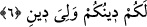

sûrede tekrâr yoktur.
Bâzı âlimlere göre, bu iki âyet şimdiki zamandaki ibâdeti, onlardan önceki iki âyet de
gelecek zamandaki ibâdeti nefyeder; yâni olmayacağını ifâde eder.
Bu âyette, önceki âyetteki “mâ abettüm/geçmişten beri ibâdet ettiğiniz” cümlesine
uygun olsun diye “mâ abedtü” denilebilirdi, ama denilmemiştir. Çünkü onlar bi‘setten
önce de putlara tapmakla biliniyorlardı. Rasûlullah (s.a.) ise o zaman Allah’ın emrine
uyarak O’na ibâdet etmekle meşhûr olmuş değildir. Ancak bir şeyle tanınmamak o şeyin
olmamasını gerektirmez. Rasûlullah (s.a.)’in öyle tanınmaması O’nun bi‘setten önce
Allah’a ibâdet etmediğini göstermez. Efendimiz’in o zaman yaptıkları, devâm edip
gelen eski âdetlere uymak şeklindeydi.
Kâmûs’ta ifâde edildiğine göre, Rasûlullah (s.a.) onların aralarında kaldığı şekliyle
Hz. İbrâhim ve İsmâil (a.s.)’dan mîrâs kalan dînî ahkâm üzere amel etmekteydi. Onlar
gibi hacceder, onların nikâh ahkâmını tatbîk eder, onlar gibi alır-satar; usûl ve
üslûplarını kullanırdı. Ama tevhîde gelince, kavmi bunu değiştirmişlerdi. Allah Rasûlü
(s.a.) ise dâimâ tevhîd üzere bulundu.
Ââyette akıllılar için kullanılan “men” ism-i mevsûlü yerine “mâ”’nın tercîh edilmesi,
maksadın vasıflandırma olmasından dolayıdır. Sanki şöyle denmiş olmaktadır: Benim
ibâdet ettiğim O azametinin miktârı bilinemez olan şânı yüce Ma‘bûd’a…
6. Sizin dîniniz size, benim dinim de banadır.
“Sizin dîniniz size” ifâdesi, “Ben sizin taptıklarınıza tapmayacağım” âyeti ile “Ben
aslâ sizin taptıklarınıza tapıcı değilim” âyetlerinin anlamını pekiştirmektedir.
“Benim dinim de banadır” ifâdesi de “Siz de benim kulluk ettiğime kulluk ediciler
değilsiniz” âyetinin mânâsını pekiştirmektedir.
Buna göre âyetin mânâsı şöyledir: “Sizin Allah’a ortak koşmaktan ibâret olan dîniniz
size mahsûstur, o sizin heveslendiğiniz gibi aslâ bana uygun gelmez. O hâlde boşuna
ümid bağlamayınız, çünku bu imkânsızdır. Tevhîdden ibâret olan benim dînim ise bana
âiddir, o da size geçmez. Çünkü siz onu imkânsız bir şarta bağladınız. İmkânsız olan bu
şart benim sizin ilâhlarınıza kulluk etmem veya onlara teslîm olmamdır. Sizin
va‘dettiğiniz şey şirkin ta kendisidir.” Zîrâ, onların “Bir sene sen bizim ilâhlarımıza
taparsın, bir sene de biz senin ilâhına kulluk ederiz” yolundaki sözleri her iki zümrenin
kullukta ortak olmaları esâsı üzere binâ edilmiştir. “Size” ve “bana” ifâdelerinin öne
alınmasıyla meydana gelen kasr, kesin olarak “kasr-ı ifrâd”; yâni cümleye “sâdece size
âiddir, başkasına değil”, “sâdece bana âiddir, başkasına değil” mânâsı verir.
Aynü’l-meânî ve benzeri eserlerde ifâde edildiğine göre bu âyetin hükmü seyf âyeti
ile mensûhtur; hükmü kaldırılmıştır.